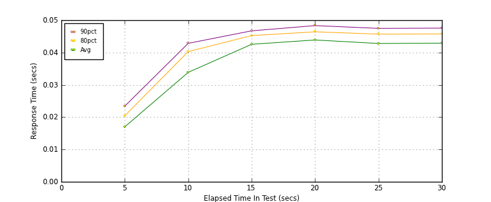
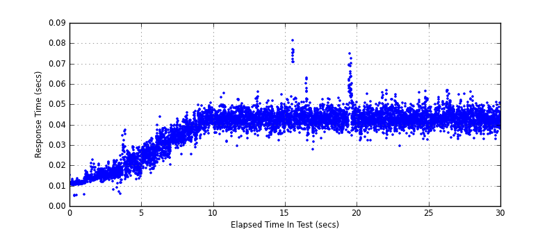
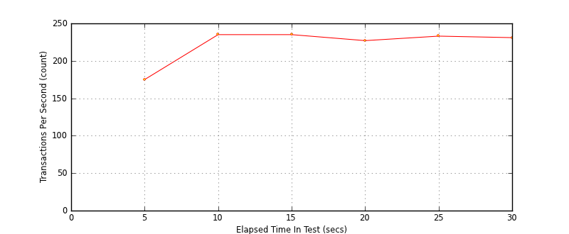

Performance Results Report
Summary
transactions: 6705
errors: 0
run time: 30 secs
rampup: 10 secs
test start: 2014-02-04 11:23:03
test finish: 2014-02-04 11:23:33
time-series interval: 5 secs
workload configuration:
| group name | threads | script name |
|---|
| user_group-1 | 10 | read_user.py |
All Transactions
Transaction Response Summary (secs)
| count | min | avg | 80pct | 90pct | 95pct | max | stdev |
|---|
| 6705 | 0.005 | 0.038 | 0.045 | 0.047 | 0.048 | 0.081 | 0.010 |
Interval Details (secs)
| interval | count | rate | min | avg | 80pct | 90pct | 95pct | max | stdev |
|---|
| 1 | 879 | 175.80 | 0.005 | 0.017 | 0.020 | 0.023 | 0.025 | 0.037 | 0.004 |
| 2 | 1176 | 235.20 | 0.016 | 0.034 | 0.040 | 0.043 | 0.045 | 0.051 | 0.007 |
| 3 | 1175 | 235.00 | 0.029 | 0.043 | 0.045 | 0.047 | 0.048 | 0.056 | 0.003 |
| 4 | 1139 | 227.80 | 0.028 | 0.044 | 0.046 | 0.048 | 0.052 | 0.081 | 0.006 |
| 5 | 1167 | 233.40 | 0.029 | 0.043 | 0.046 | 0.047 | 0.049 | 0.057 | 0.004 |
| 6 | 1159 | 231.80 | 0.033 | 0.043 | 0.046 | 0.048 | 0.049 | 0.057 | 0.004 |
Graphs
Response Time: 5 sec time-series

Response Time: raw data (all points)

Throughput: 5 sec time-series

Custom Timer: get_tweets
Timer Summary (secs)
| count | min | avg | 80pct | 90pct | 95pct | max | stdev |
|---|
| 6695 | 0.005 | 0.038 | 0.045 | 0.047 | 0.048 | 0.081 | 0.010 |
Interval Details (secs)
| interval | count | rate | min | avg | 80pct | 90pct | 95pct | max | stdev |
|---|
| 1 | 879 | 175.80 | 0.005 | 0.017 | 0.020 | 0.023 | 0.025 | 0.037 | 0.004 |
| 2 | 1176 | 235.20 | 0.016 | 0.034 | 0.040 | 0.043 | 0.045 | 0.051 | 0.007 |
| 3 | 1175 | 235.00 | 0.029 | 0.042 | 0.045 | 0.047 | 0.048 | 0.056 | 0.003 |
| 4 | 1139 | 227.80 | 0.028 | 0.044 | 0.046 | 0.048 | 0.052 | 0.081 | 0.006 |
| 5 | 1167 | 233.40 | 0.029 | 0.043 | 0.046 | 0.047 | 0.049 | 0.057 | 0.004 |
| 6 | 1159 | 231.80 | 0.033 | 0.043 | 0.046 | 0.047 | 0.049 | 0.057 | 0.004 |
Graphs
Response Time: 5 sec time-series
Response Time: raw data (all points)
Throughput: 5 sec time-series